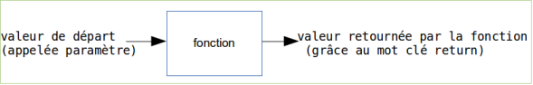
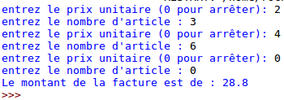

Les fonctions en programmation
Les fonctions permettent de décomposer un programme complexe en une série de sous-programmes plus simples. De plus, les fonctions sont réutilisables : si nous disposons d'une fonction capable de calculer une racine carrée, par exemple, nous pouvons l'utiliser un peu partout dans notre programme sans avoir à la réécrire à chaque fois.
La notion de fonction en informatique est comparable à la notion de fonction en mathématiques.

Si nous avons y = 3x+2, pour une valeur donnée de x, nous aurons une valeur de y.
Exemple : x=4 donc y= 14 (y = 3.4+2=14, attention ici le point correspond au signe "multiplié").
La fonction en informatique est basée sur la même idée :
Voici la syntaxe employée en Python (quelque soit le langage, le principe est le même) pour définir une fonction :
def nomDeLaFonction(parametre):
instruction_1
instruction_2
........
return y
suite programme
La fonction retournera la valeur contenue dans la variable y.
Codons notre exemple (y=3x+2) en créant une fonction "maFonction" :
def maFonction(x):
y=3*x+2
return y
Pour "utiliser" la fonction "maFonction", il suffit d'écrire : maFonction (4) (dans ce cas précis, notre fonction renverra le nombre 14).
À faire vous-même 10.1
Tester le programme suivant :
def maFonction(x):
y=3*x+2
return y
print (maFonction(4))
Il faut savoir qu'au moment de l'exécution de votre programme le code "maFonction(4)" sera systématiquement remplacé par la valeur retournée par la fonction (toujours dans notre exemple le "maFonction(4) sera remplacé par le nombre 14). Le programme ci-dessus affichera donc 14.
À faire vous-même 10.2
Soit le programme suivant :
def maFonction(x):
y=3*x+2
return y
print('le résultat est :',end='')
print(maFonction(5))
Quel est le résultat attendu après l'exécution de ce programme ? Vérifiez votre réponse à l'aide de IDLE ou de Python fiddle.
À faire vous-même 10.3
Coder en Python la fonction y=x2+2x+10
Il est possible de faire passer plusieurs paramètres à une fonction.
À faire vous-même 10.4
Quel est le résultat attendu après l'exécution du programme ci-dessous ?
def uneAutreFonction(x,b):
y=3*x+b
return y
print('le résultat est :'),
print(uneAutreFonction(5,3))
Les paramètres peuvent être des chaînes de caractères (ainsi que la valeur retournée)
À faire vous-même 10.5
Quel est le résultat attendu après l'exécution du programme ci-dessous ?
def ditBonjour(nom,age):
phrase='Bonjour '+nom+', vous avez '+str(age)+' ans.'
return phrase
print(ditBonjour('toto',14))
print(ditBonjour('titi',17))
Attention :
- remarquez bien les guillemets autour des paramètres toto et titi (ce sont des chaînes de caractères)
- remarquez l'utilisation du str(age) car la variable age est de type int, il est donc nécessaire de transformer le nombre entier en string afin d'avoir une concaténation
Vérifiez votre réponse à l'aide de IDLE ou de Python fiddle.
Les paramètres ne sont pas obligatoires.
À faire vous-même 10.6
Tester ce programme :
def maFon():
if a=="x":
y=0
else:
y=1
return y
a=input("Votre choix (x ou autre chose) : ")
print (maFon())
Il faut aussi savoir qu'une fonction ne retourne pas forcément de valeur (le mot clé return n'est pas obligatoire). Mais si elle ne retourne pas de valeur, que fait-elle ? Elle peut faire plein de choses, par exemple elle peut tout simplement afficher un texte. Sachez que dans certains langages, on utilise les termes méthode ou procédure pour qualifier une fonction "qui ne retourne rien".
À faire vous-même 10.7
Soit le programme suivant :
def ditBonjour(nom,age):
phrase='Bonjour '+nom+', vous avez '+str(age)+' ans.'
print(phrase)
ditBonjour('Baptiste',14)
ditBonjour('Ninon',11)
ditBonjour('Titouan',7)
Quel est le résultat attendu après l'exécution de ce programme ? Vérifiez votre réponse à l'aide de IDLE ou de Python fiddle.
À faire vous-même 10.8
Soit le programme suivant :
def annonce(num,prov,dest):
if dest!="0":
print("le train n° "+num+" en provenance de ",end='')
print(prov+" et à destination de "+dest+" entre en gare.")
else:
print("le train n° "+num+" en provenance de ",end='')
print(prov+" entre en gare. Ce train est terminus Triffouillis-les-Oies.")
annonce("4557","Paris","Marseille")
annonce("5768","Bonneville","0")
Quel est le résultat attendu après l'exécution de ce programme ? Vérifiez votre réponse à l'aide de IDLE ou de Python fiddle.
À faire vous-même 10.9
Vous êtes gérant d'un magasin et vous désirez écrire un programme Python qui calculera automatiquement le montant de la facture des clients. Tout client qui achète au moins 5 fois le même article se voit octroyer une remise de 5 % (uniquement sur le montant de l'achat de cet article). Afin de simplifier le problème, on considère qu'un client n'achète qu'un seul type d'article. Écrire une fonction qui prend en paramètre le prix unitaire de l'article et le nombre d'articles achetés. Cette fonction doit retourner le montant de la facture.
À faire vous-même 10.10
En réutilisant la fonction créée au "À faire vous-même 10.9", créer un programme permettant au caissier de calculer le montant de la facture d'un client. Le caissier devra saisir le prix unitaire de l'article puis le nombre d'articles correspondant. Le caissier pourra interrompre la saisie en indiquant un prix unitaire égale à zéro.
un exemple :
